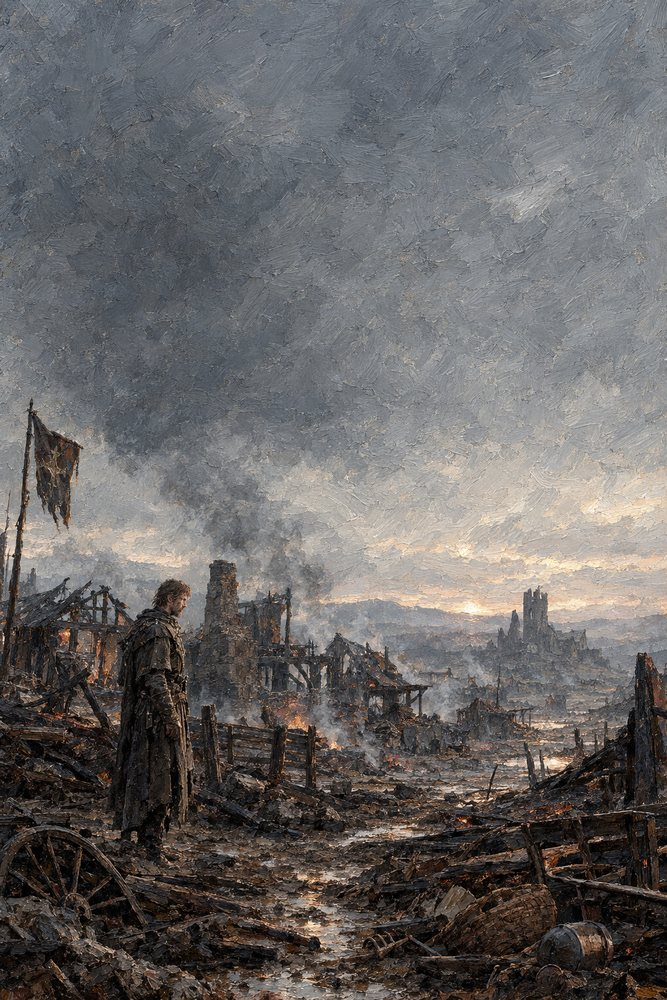

Record 5 of 15
A village after the purge
What is left of a purged village: burned timbers, a cart wheel in the mud, smoke still rising, a torn banner on its pole and one man standing among the ruins.
A bearded man in a long dark coat stands alone among the burned timbers, broken cart wheel and puddled mud of a destroyed village, a torn dark banner with a star on a pole beside him, smoke rising under a heavy grey sky and a ruined tower on the far hill.